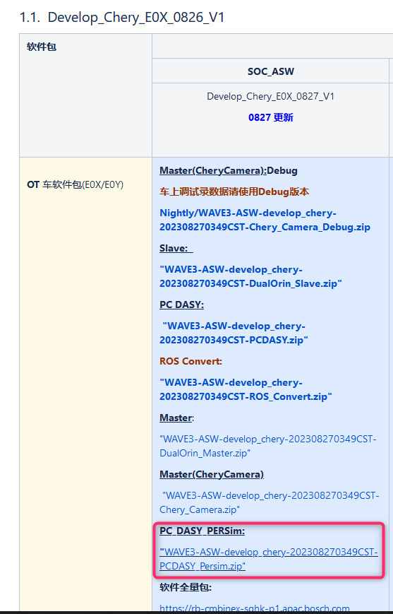
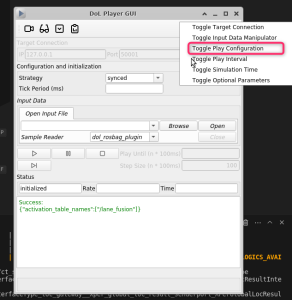
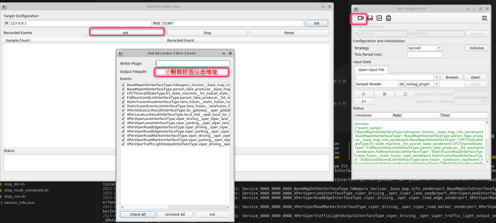
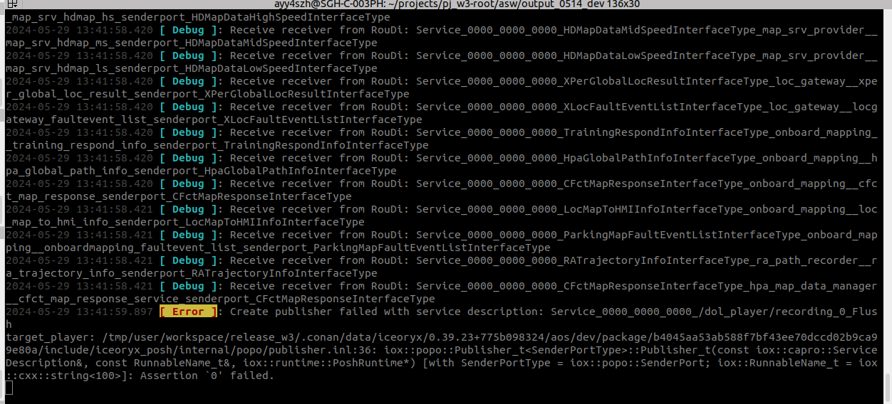
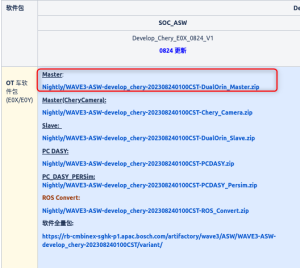
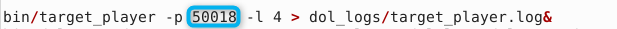
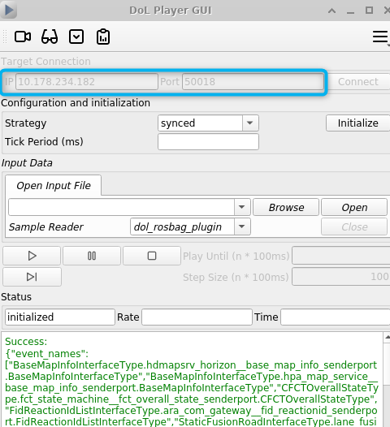
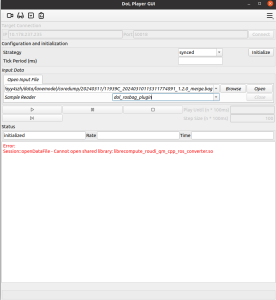
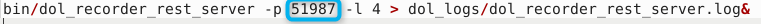
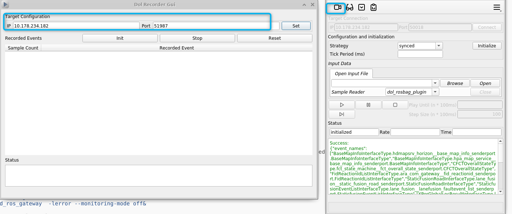

LaneFusion Dol tutorial
1.x86 DOL
1.1 Preparation of use:
1. Software compile reference:
060122.[WAVE3] "OneFlow" compilation and integration
1) Just start to use DOL, it is recommended to use Daily Build to get the software directly:

2. Find the AOS DOL environment corresponding to the software:
3. Put the contents of the PC version of Bin and lib folder in the BIN and LIB in the software output
After copying, lose a file with a file with BIN: CHMOD 777 DOL_PLAYER_GUI
4. Use the modified sf: start_dol.sh to place the file in Output
1.2 Start using:
1. Start Roscore first
2. Running script: ./start_dol.sh
1) CONNECT first, then initialize
2) Remember to set the playback rate

3) Record data:

4) Click the arrow play button
5) After finishing use, remember to turn off the DOL -related process, otherwise you should use it next time
./stop_dol.sh
common problem:
After initialize:
- 
Reason: Bin calls the interface function of So is modified
Solution: Re -compile BIN, compile Bin, you need to rely on the new SO, and then enter BIN and Socopy.If it still doesn't work, you can only re -edit the dol
Can't receive input ROS TOPIC:
Reason: The interface used by Rosbag and Output does not correspond
Solution: You can use bin link's latest so re -compiled.
2.B Sample DOL
2.1 Preparation of use:
Use dol on B, divide target + host
1.TARGET:B SAMPLE mainly starts the LANEFUSION software on QNX
1.1 Software:
Use daily_build software: W3 PI2309 0824 SW Integration Release Note（Develop_Chery）

Download Master's software and pass the SCP command to B Sample:
scp ***.zip root@10.178.234.182:/cache/update/output_lanemodel/
Unzip ****.
Or use OneFlow to edit a version of software: 060122.[WAVE3] "OneFlow" compilation and integration
If it does not involve architecture upgrades, you can try oneflow's pictureless compilation, which is much faster
ROOT Warehouse compiles when ROOT, Interface, Reference, and SF Warehouse Commit are consistent.
1.2 Deploy the DOL environment into the software output of the above decompression:
1.2.1 Find the DOL_QNX environment corresponding to the AOS version: https://sites.inside-share4.bosch.com/sites/154667/Documents/Forms/AllItems.aspx?RootFolder=%2Fsites%2F154667%2FDocuments%2F05%5FSW%2F05%5FINT%2F06%5FTool%2F01%5FAOS%5FTool%2F03%5FAOS%5F2307%2E2%2E1
Copy the corresponding lib & bin content to lib & bin in Output
You need to add dol_player_gui to execution permissions: chmod 777 dol_player_gui
1.3 Preparing for startup: (Note that there is a difference between this script and the host PC)
scp start_dol_qnx.sh root@10.178.234.182:/cache/update/output_lanemodel/output
Among them -a 2 -S 1 represents the highest level of log
-R represents Replay waiting for DOL Gui to release data back and forth
1.4 Prepare stop script:
No stop_dol.sh, QNX cannot recognize pkill, you can only kill the process manually
2. Host:pc: Start the GUI interface of the DOL
stop_dol is the same as the previous PC
2.2 Formally used:
2.2.1 Start at the target end and start the software:
./start_dol_qnx.sh
Note: There is no L in the currently compiled lib ibrecompute_bytesoup_class_info.so
You need to add this environment variable to the starting script: Export Dol_recorder_Bytesoup_Class_LIB = $ Build_dir/Lib/ librecompute_bytesoup_class_info_dualorinmaster.so
export DOL_RECORDER_BYTESOUP_CLASS_LIB=$PWD/
2.2.2 Again HOST end:
./start_dol_pc.sh
IP: It is B SAMPLEIP; Port 50018, specified in the script 

If you encounter Open Rosbag Error:

The reason is that the ASW bag does not include CPP_ROS_CONVERTER, and Rosbag cannot be read.
Solution: exist https://rb-cmbinex-sghk-p1.apac.bosch.com/artifactory/wave3/ASW/WAVE3-ASW-develop_chery-202403110110CST/variant/ Download CPP_ROS_CONVERER
WAVE3-ASW-develop_chery-202403110110CST-ROS_Convert.zip
Place the CPP_ROS_CONVVERTER.SO in the software lib directory after decompression
Seeing these processes, it is explained
2.2.3 Recording data
IP is still the IP of BSAMPLE, Port port 51987 is specified in the script 

common problem:
Open Rosbag error:
The reason is that the ASW bag does not include CPP_ROS_CONVERTER, and Rosbag cannot be read.
Solution: exist https://rb-cmbinex-sghk-p1.apac.bosch.com/artifactory/wave3/ASW/WAVE3-ASW-develop_chery-202403110110CST/variant/ Download CPP_ROS_CONVERER
WAVE3-ASW-develop_chery-202403110110CST-ROS_Convert.zip
Place the CPP_ROS_CONVVERTER.SO in the software lib directory after decompressionStart the script error: I can't find Bin, Execute Not Found
It may be that there is a problem with the format of the script.
After Vim is opened,: set ff?
If it is displayed, then
:set ff=unix
This can run on BSAMPLE
refer to: https://blog.csdn.net/fireblue1990/article/details/74275843
The file between BSAMPLE and PC, SCP speed faster than mounting PC and CP
QNX software compilation:
You can use OneFlow to edit a version of software: 060122.[WAVE3] "OneFlow" compilation and integration
If it does not involve architecture upgrades, you can try oneflow's picture compilation, which is much faster, it has been compiled in one or two minutes.
ROOT Warehouse compiles when ROOT, Interface, Reference, and SF Warehouse Commit are consistent.